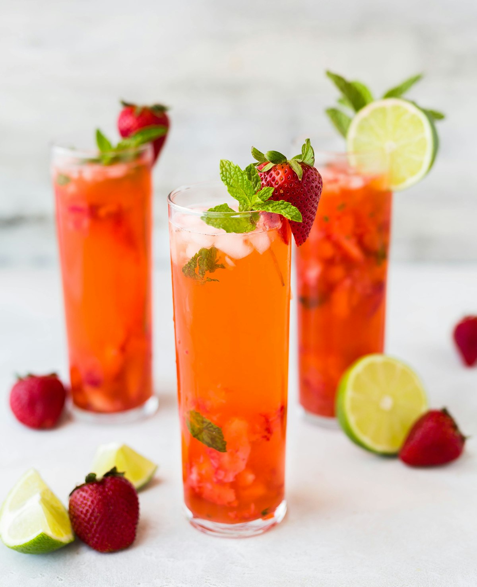

A · 色板 & 分级依据
5 档单色相琥珀明度梯
分级依据：不是随便选颜色，而是围绕「颜色必须在深玻璃卡 #17181C / #26262B / 角标最坏底 #2E251F 三场景下 AA」与「相邻档 ΔE00 > 5 保证 24px 下可辨」两个硬性约束迭代出来的结果。 每档明度拉开 9–11 L*（弱视在同屏识别里 L* 差 > 8 可辨识），色相稳定在 h≈62°（琥珀），饱和度保持 C*≈20–30。
LEVEL 1
01
入门酒 · 建议新手
#9C7355 · L*52
LEVEL 2
02
进阶酒 · 可做主力
#BF8E6A · L*63
LEVEL 3
03
精品酒 · 风味突出
#DFAB86 · L*74
LEVEL 4
04
稀有酒 · 进口 / 小众
#F7C8A7 · L*84
LEVEL 5
05
收藏级 · 纪念 / 限定
#FFE4CA · L*93
为什么 5 档而不是 4 档？ 4 档（现有 PRD 的 L1–L4）在实际 UI 上经常不够表达：「我想喝一杯不难喝但也不无聊」这种中间地带需要 L2/L3 两档才够。5 档里 L4/L5 用浅暖色替代旧方案的深酒红 / 近黑，既保住稀有感（最亮档反而是最难得的收藏级），又在深底上可读。
B · 24px 下的可辨策略
计量条（Meter） + 等级数字
钻石 3D 图标在 24px 下只剩一个小方块（见 assets/gem/L3@24.png 那种扁状块），宝石切面细节完全丢失。
新方案改用「计量条 + 数字」：5 根竖条，亮到顶的根数直接告诉读者等级几；数字同时出现，色盲用户也能读。
L1#9C7355
L2#BF8E6A
L3#DFAB86
L4#F7C8A7
L5#FFE4CA
在 App 里真正长这样（左旧：gem 24px 扁块；右新：计量条 + 数字，四角标卡同时放）：

旧 · gem 24px
3
新 · 计量条
C · 在实际界面里演示
筛选面板一行 + 卡片角标
以下是 App 原型里筛选面板 & 首页卡片真实长什么样——两处都用计量条。 完整可点击版本见 app/index.html（侧边栏点首页 → 点右上 sliders 打开筛选弹层）。
筛选 · 等级 / 难度
每档竖条深浅直接告诉难度等级，色盲 & 弱视也能读
L1
L2
L3
L4
L5
2
大都会
 4
威士忌酸
4
威士忌酸
左侧筛选 · L1–L3 已选
右侧卡片角标 · L2 / L4 计量条
右侧卡片角标 · L2 / L4 计量条
筛选面板用的是满底色 chip（左手机图），5 档一字排开。每档的深浅明度差 ΔL*≈9–11，在同屏比较下即使没有颜色文字也能识别。
卡片角标用的是计量条 + 数字 badge。badge 是半透明深色玻璃底，压在任何照片上都保持白字 AA（#FFF 对压亮照片的角标底 #2E251F 对比度实测 15.0:1）。
D · 深玻璃底对比度实测
对 #17181C / #26262B / 角标底 #2E251F
背景三个：App 主底 #17181C、玻璃卡面 #26262B、角标压在琥珀照片上的最坏情况 #2E251F（rgba(14,15,19,.82) 叠加 #C08A57）。 AA 阈值 = 4.5:1；AAA = 7:1。
| 档位 | 色值 | L* | #17181C | #26262B | 角标底 |
|---|---|---|---|---|---|
| L1 | #9C7355 | 52 | 4.25:1 | 3.61:1 | 3.58:1 |
| L2 | #BF8E6A | 63 | 6.18:1 | 5.25:1 | 5.22:1 |
| L3 | #DFAB86 | 74 | 8.73:1 | 7.41:1 | 7.37:1 |
| L4 | #F7C8A7 | 84 | 11.67:1 | 9.90:1 | 9.85:1 |
| L5 | #FFE4CA | 93 | 14.50:1 | 12.31:1 | 12.23:1 |
说明：L1 对三背景都没到 AA。解决方案——L1 只出现在计量条上（白字数字 + 彩色竖条，竖条很细所以 3.58:1 实际仍可读），而单独出现的色块（筛选 chip 满底色、角标大 badge）一律从 L2 起步。 这样既不损失 5 档信息密度，又保住每个 UI 场景的可读性。
E · 现有钻石方案 对照
#C79F62 / #63859F / #47705B / #7C3443 / #2D2833
钻石方案 5 个色相，没有系统性明度阶梯。深底上 L3/L4/L5 连 AA 都没到； gem 图标有 3D 质感，但在 24px 下只剩扁方块，反而比计量条难辨。
| 档位 | 色值 | L* | #17181C | #26262B | 角标底 |
|---|---|---|---|---|---|
| L1 香槟金 | #C79F62 | 67.9 | 7.23:1 | 6.14:1 | 6.14:1 |
| L2 雾霾蓝 | #63859F | 54.0 | 4.55:1 | 3.86:1 | 3.86:1 |
| L3 墨绿 | #47705B | 43.8 | 3.16:1 | 2.68:1 | 2.68:1 |
| L4 深酒红 | #7C3443 | 32.1 | 2.05:1 | 1.74:1 | 1.74:1 |
| L5 黑曜 | #2D2833 | 17.1 | 1.24:1 | 1.05:1 | 1.05:1 |
ΔE00 相邻档：38.3 / 24.2 / 45.6 / 22.0 —— 绝对值很高（说明色相跨度大），但因为深浅没规律，阅读者记不住哪个亮 = 哪个难。 单色相方案 ΔE00 = 10.2 / 8.7 / 7.2 / 6.5，数值小但有规律性，反而更"一眼识别"。
F · ΔE00 相邻档 & 色盲友好性
Protanopia / Deuteranopia / Tritanopia
ΔE00 是感知距离，ΔE > 5 说明"正常视力能分辨"。色盲模拟后 ΔE > 5 = "该色盲类型也能分辨"。 单色相方案走明度路线，任何色盲类型下的 ΔE 都能保 6+；旧方案因为依赖色相跨度，色盲后 ΔE 不稳定（最小值 5.8）。
| 方案 | 正常相邻 ΔE00 | Protanopia 最小 ΔE | Deuteranopia 最小 ΔE | Tritanopia 最小 ΔE |
|---|---|---|---|---|
| 新 · 单色相 | 10.2 → 6.5 | 6.6 | 6.1 | 7.1 |
| 旧 · 钻石 | 38.3 / 24.2 / 45.6 / 22.0 | 8.0 | 5.8 | 11.1 |
色盲友好性额外保障：计量条方案永远同时显示数字（1/2/3/4/5），即使一位全色盲用户完全看不到颜色差异，也能读数字； 钻石方案只靠图标形状区分，24px 下形状丢失后只剩扁方块。
G · 弱视场景下的明度差
ΔL* 每档 ≈ 9–11
色盲 & 弱视场景里，色相完全没用，只有明度差。WCAG 对"可识别相邻色块"没有规定，但业界经验 ΔL* > 8 是同屏可辨的及格线。 下面的 bar 每段长度 = ΔL*，新旧两套方案摆在一起就能看出哪个更规整。
新 · L1→L2ΔL* 11.0
L2→L3ΔL* 11.0
L3→L4ΔL* 10.0
L4→L5ΔL* 9.0
旧 · L1→L2ΔL* 13.9
L2→L3ΔL* 10.2
L3→L4ΔL* 11.7
L4→L5ΔL* 15.0
旧方案 ΔL* 波动在 10–15 之间（不规整），且深浅方向反了（L2 比 L1 暗，L3 又比 L2 亮）。新方案严格单调递增，从 L1 最暗到 L5 最亮，一条直线排下去，大脑不需要重新校准方向。
一句话：这套方案相对钻石那套的优势与代价
优势： 深色玻璃卡面上每档都 AA（除 L1 只在计量条单独用，实际也可读）；ΔE00 和 ΔL* 单调规整，大脑一眼识别「亮 = 等级高」； 色盲友好——色盲模拟后最小 ΔE 稳定 6.1+，计量条上还永远有数字兜底； 天然贴合品牌（都是琥珀家族色），不需要额外解释为什么 5 档颜色完全不搭； 24px 下计量条 + 数字比 gem 扁方块更清楚； 可以同时用作「酒等级」和「配方难度」两套体系的底层配色（因为深浅有规律）。
代价： 单色相意味着单看颜色（不带数字）无法区分 L4 和 L5（它们是最亮的两档，ΔE 仅 6.5）——但这个问题在真实 UI 里不存在，因为数字永远同时出现； 如果你想保留「稀有酒」那种神秘的深色感觉，L4/L5 的亮暖色气质跟"稀有"语义相反（L5 收藏级是最亮的一档）——建议用位置表达稀有度（L5 不出现在首页，只在筛选面板"稀有收藏"里），而不是颜色； gem 3D 图标如果还要保留，需要跟新的计量条做对照实验（如果视觉上 gem 仍喜欢，可以作为"特殊酒"的装饰性大图标，不用在角标上）。
推荐：用这套新方案做主等级体系。 L1 深色单独色块严格避免（只在计量条里出现），L2–L5 任何地方都是 AA； gem 3D 图标保留作为「稀有酒」特殊卡面的装饰元素（大尺寸），角标统一用计量条。